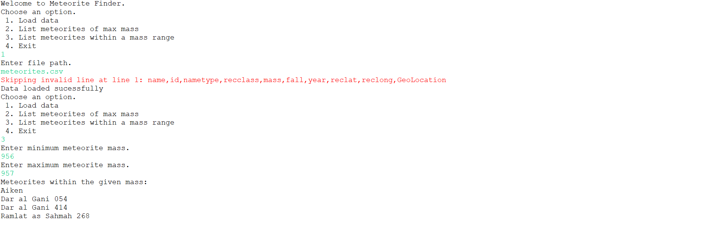

Meteorite Tracker
The Meteorite Tracking app is designed to efficiently search and list known meteorites based on their mass using a Red-Black Tree data structure. The backend is responsible for implementing the core functionalities, including reading meteorite data from a CSV file, inserting it into the Red-Black Tree, and providing access to the data based on user commands from the frontend. The frontend, on the other hand, focuses on creating an interactive user interface that prompts users to input commands, requests necessary details, and displays the results.
Click here to view